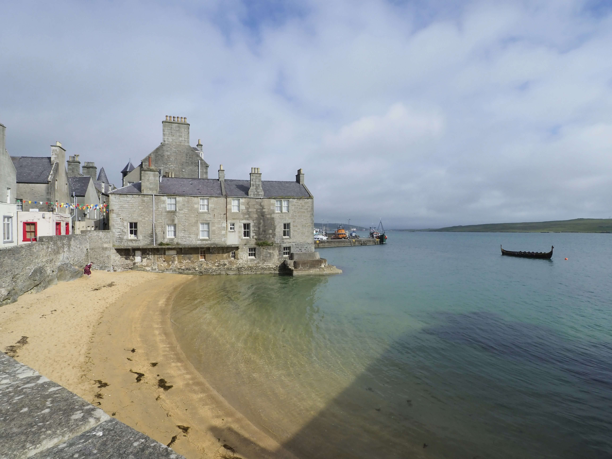
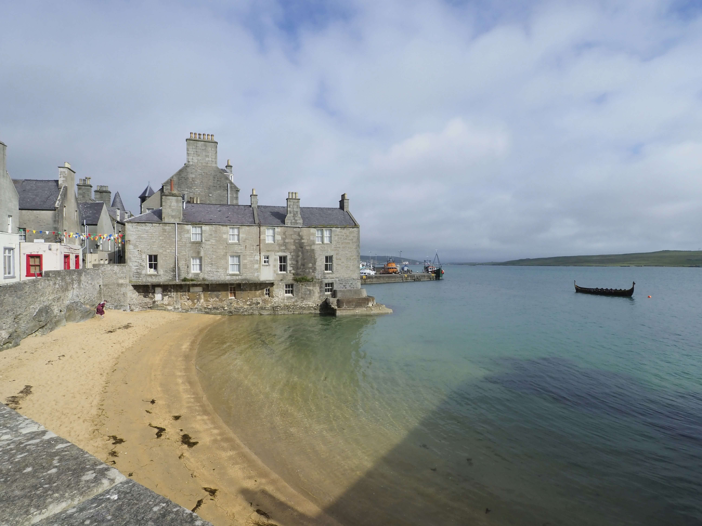

Screenplay - Shetland's Annual Film Festival
The Shetland Film Festival, called Screenplay, is celebrated as Britain's most northerly film festival and has been a cornerstone of Shetland's cultural calendar since its founding in 2006. Traditionally curated by renowned film critic Mark Kermode and historian Linda Ruth Williams, the festival takes place at Mareel, Shetland's state-of-the-art cinema and arts venue, with events across the islands. Screenplay offers an eclectic mix of international and local films, themed screenings, and categories such as Look North and Home Made, which showcase work by Shetland filmmakers. Alongside screenings, the festival features workshops, lectures, and Q&A sessions with industry professionals, creating a vibrant space for film lovers and fostering community engagement. Although the festival concluded its last edition in 2023, discussions are underway to introduce new cinematic events to continue Shetland's rich tradition of celebrating film.
Highlights from the 2023 festival
 
